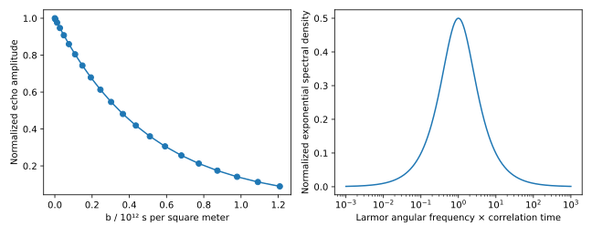

IIT Hyderabad · NPTEL · Independent study edition
NMR diffusion measurements and local jump times
A spin echo can lose amplitude because atoms changed position in a field gradient or because their local magnetic environments fluctuated. Those are different observations. The first can encode a displacement distribution directly; the second yields a correlation time whose relation to diffusion depends on a microscopic model.
Lecture 39 supplies NMR foundations, gradient echoes, and indirect relaxation. Lecture 40 supplies Bloch-equation and motional-narrowing questions; Lecture 41's opening NMR reference is context only. The pulse-sequence timing is checked against the original Stejskal–Tanner paper at printed pp. 289–290. Numerical parameters below are synthetic.
18.1 Precession, excitation, and relaxation are separate terms L39 00:21
A nucleus with angular momentum \(\boldsymbol I\) can have magnetic moment \(\boldsymbol\mu=\gamma\boldsymbol I\), where the gyromagnetic ratio \(\gamma\) has units rad/(s·T) in the angular-frequency convention. In a uniform static magnetic field \(\boldsymbol B=B_0\boldsymbol e_z\), the magnetic energy is \(-\boldsymbol\mu\cdot\boldsymbol B\). For a spin-one-half nucleus, the two Zeeman levels differ by \(\hbar|\gamma|B_0\), with reduced Planck constant hbar in J·s. Their thermal population imbalance produces an equilibrium longitudinal magnetization.
A radio-frequency field near the Larmor angular frequency \(\omega_0=|\gamma|B_0\) rotates magnetization away from that equilibrium direction. The classical ensemble magnetization \(\boldsymbol M\) then precesses and relaxes. A phenomenological Bloch–Torrey model for an isotropic constant diffusivity D is
\[ \partial_t\boldsymbol M=\gamma\boldsymbol M\times\boldsymbol B -\frac{M_x\boldsymbol e_x+M_y\boldsymbol e_y}{T_2} -\frac{M_z-M_{\rm eq}}{T_1}\boldsymbol e_z +D\nabla^2\boldsymbol M. \tag{18.1} \]Here \(T_1\) is the longitudinal recovery time and \(T_2\) the transverse coherence-decay time, both in seconds; \(M_{\rm eq}\) is the uniform equilibrium longitudinal magnetization. The first term is precession, the next two describe relaxation, and the last transports magnetization with diffusing spins. Flow, exchange between environments, spatially varying equilibrium, and anisotropic diffusion require additional terms or a modified operator.
Inversion recovery probes the return of longitudinal magnetization after a pulse sequence changes its sign. Transverse free-induction decay also contains static field inhomogeneity, often summarized by an apparent \(T_2^*\); refocusing echoes can remove a reversible static contribution without undoing every dynamic process. The distinction prevents static broadening from being misidentified as irreversible diffusion.
There is no universal inequality \(T_2\leq T_1\). In a simple passive Markov two-level model with an additional nonnegative pure-dephasing rate, \(T_2^{-1}=(2T_1)^{-1}+T_\varphi^{-1}\), implying \(T_2\leq2T_1\) within that model. Many solids have much shorter transverse times, but that common regime is not the stronger universal theorem. Relaxation conventions and the measured sequence must accompany reported times.
18.2 A field gradient converts displacement into phase L39 08:32
Take one spatial direction x and a field gradient \(g(t)\), in T/m. The local angular frequency shift is \(\gamma g(t)x\). Radio-frequency refocusing pulses reverse the sign with which some parts of the trajectory contribute to the final phase. Let \(g_{\rm eff}(t)\) denote that signed effective gradient. A spin at trajectory \(x(t)\) accumulates phase \(\phi=\gamma\int_0^{T_E}g_{\rm eff}(t)x(t)dt\), where \(T_E\) is echo time.
A balanced echo has \(\int_0^{T_E}g_{\rm eff}dt=0\), so a stationary spin's position-dependent phase refocuses. Define \(q_g(t)=\gamma\int_0^t g_{\rm eff}(s)ds\), in m⁻¹. The subscript distinguishes this gradient moment from a nuclear-scattering wavevector. Integration by parts gives \(\phi=-\int_0^{T_E}q_g(t)dx(t)\) when the endpoint moments vanish.
For unrestricted Brownian motion with coefficient D, increments have zero mean and variance \(2Ddt\). The stochastic integral is Gaussian with variance \(\langle\phi^2\rangle=2D\int q_g^2dt\). The characteristic function of a zero-mean Gaussian is \(\langle e^{i\phi}\rangle=e^{-\langle\phi^2\rangle/2}\). The normalized diffusion attenuation is therefore
\[ \frac{S(g)}{S(0)}=e^{-bD},\qquad b=\int_0^{T_E}q_g^2(t)dt. \tag{18.2} \]The b value has units s/m², making the exponent dimensionless. Normalizing by a zero-gradient sequence at identical timing removes a common transverse-relaxation factor in this simple model. It does not remove flow phase, exchange, restricted geometry, or gradient-dependent artifacts. The Gaussian-increment assumption is the hinge of the monoexponential free-diffusion result.
For a constant physical gradient with a refocusing pulse at time tau and echo at twice tau, the effective gradient changes sign halfway. The moment is triangular: \(q_g=\gamma gt\) on the first interval and \(q_g=\gamma g(2\tau-t)\) on the second. Integrating its square gives \(b=2\gamma^2g^2\tau^3/3\). Including independent transverse relaxation, the unnormalized echo factor is \(\exp[-2\tau/T_2-(2/3)\gamma^2g^2D\tau^3]\). The coefficient two-thirds belongs to this sequence and timing convention.
18.3 Derive the finite-pulse Stejskal–Tanner factor L39 16:45
Consider two rectangular effective-gradient pulses of equal magnitude g, duration \(\delta\), and opposite sign, with leading edges separated by \(\Delta\geq\delta\). The first occupies \([0,\delta]\), and the second \([\Delta,\Delta+\delta]\). Between them, the gradient moment is constant even though the applied effective gradient is zero. At the end it returns to zero.
The moment rises as \(\gamma gt\) during the first pulse, remains \(\gamma g\delta\) until time Delta, then falls as \(\gamma g(\Delta+\delta-t)\). Its squared integral is the sum of two ramps and a plateau:
\[ b=\gamma^2g^2\left[\frac{\delta^3}{3} +\delta^2(\Delta-\delta)+\frac{\delta^3}{3}\right] =\gamma^2g^2\delta^2\left(\Delta-\frac\delta3\right). \tag{18.3} \]Equation (18.2) then gives the free-diffusion pulsed-gradient echo. The finite-pulse correction is not optional unless the pulse is short relative to separation at the required accuracy. Using only \(\gamma^2g^2\delta^2\Delta\) overestimates b and consequently underestimates a fitted D from the same attenuation. Leading-edge separation is specified because defining Delta as a gap instead changes the algebraic expression.
Stejskal and Tanner's original 1965 paper, printed pp. 289–290, develops the gradient-echo attenuation with explicit timing. The inspected original copy confirms the constant-gradient coefficient and the rectangular-pulse \(\delta^2(\Delta-\delta/3)\) term. This citation supports the pulse model, while the derivation above makes its assumptions and units locally inspectable.
The laboratory uses synthetic \(\gamma=10^8\) rad/(s·T), \(\delta=0.005\) s, \(\Delta=0.05\) s, and \(D=2\times10^{-12}\) m²/s. At g ten T/m, b is \(1.208333\times10^{12}\) s/m² and normalized echo is 0.0892185. Fitting ln echo against b recovers \(2\times10^{-12}\) m²/s. Numerical integration of the actual piecewise moment agrees with (18.3) to relative error \(3.45\times10^{-8}\). These are model checks, not a claim that those settings suit a particular spectrometer or material.
18.4 Local-field fluctuations produce a different inverse problem L39 18:48
Indirect diffusion-sensitive NMR observes fluctuations of magnetic dipolar, electric quadrupolar, or electronic local environments. A local reorientation can modulate those environments without transporting a nucleus far across the specimen. For a minimal magnetic-field model, let h(t) be a stationary, zero-mean scalar field fluctuation in tesla. Define its correlation \(C(t)=\langle h(t)h(0)\rangle\), in T². A simple model is \(C(t)=C_0e^{-|t|/\tau_c}\), where \(C_0=\langle h^2\rangle\) is the field variance and \(\tau_c\gt0\) is a correlation time in seconds. Other interactions require their corresponding fluctuating coupling instead of this scalar field. The two-sided angular-frequency spectral density is
\[ J(\omega)=\int_{-\infty}^{\infty}C(t)e^{-i\omega t}dt =\frac{2C_0\tau_c}{1+\omega^2\tau_c^2}. \tag{18.4} \]The result follows by adding the two half-line exponential integrals, or integrating the cosine transform. Relaxation rates sample combinations of these spectral densities at zero, Larmor, and sometimes harmonic frequencies, weighted by the interaction geometry and spin quantum numbers. Equation (18.4) alone does not fix a universal T1 or T2 expression for every nucleus. Spin locking introduces a rotating-frame time \(T_{1\rho}\); metallic electrons can add a Korringa-type contribution. Separate channels must not be automatically assigned to diffusion.
At fixed nonzero frequency, the function \(\tau_c/(1+\omega^2\tau_c^2)\) rises and then falls, peaking at \(\omega\tau_c=1\). A single measured relaxation rate can therefore correspond to either a short or a long correlation time. In the normalized example, values \(\omega\tau_c=0.1\) and ten both give 0.0990099. Multi-frequency and temperature measurements can help select a regime, but only with a justified interaction model.
A minimal calculation explains motional narrowing. Assume the scalar field h(t) is Gaussian and produces a frequency fluctuation \(\delta\omega(t)=\gamma h(t)\). Its free-precession phase is \(\theta(t)=\gamma\int_0^t h(s)ds\). Stationarity gives \(\langle\theta^2\rangle=2\gamma^2\int_0^t(t-s)C(s)ds\). For the exponential correlation, the normalized coherence is therefore
\[ \langle e^{i\theta(t)}\rangle =\exp\!\left\{-\gamma^2C_0\left[\tau_ct-\tau_c^2(1-e^{-t/\tau_c})\right]\right\}. \]At \(t\ll\tau_c\), this becomes \(\exp(-\gamma^2C_0t^2/2)\), the quasistatic Gaussian dephasing limit. At \(t\gg\tau_c\), its logarithmic decay rate tends to \(T_{2,\rm dyn}^{-1}=\gamma^2C_0\tau_c\). In the fast-fluctuation regime \(|\gamma|\sqrt{C_0}\tau_c\ll1\), the coherence survives many correlation times and is approximately exponential over its decay scale. At fixed field variance, shortening the correlation time then reduces this linewidth contribution and lengthens transverse coherence. This scalar Gaussian model illustrates the mechanism; it does not supply every dipolar or quadrupolar relaxation rate. Confined hopping, molecular rotations, and exchanges within a local cluster can decorrelate a field without unlimited displacement, so narrowing alone does not determine long-range diffusion.
To convert a microscopic waiting time \(\tau_j\) into long-time three-dimensional diffusivity, independent isotropic jumps of length ell give \(D=\ell^2/(6\tau_j)\). A correlated jump model may instead give \(D=f\ell^2/(6\tau_j)\), where f is the specified model's dimensionless tracer correlation factor; independence gives f equal to one. A local-field correlation time need not equal that waiting time: several jumps can be needed to randomize a local environment, or one rotation can do so without net translation. This is why direct gradient attenuation and indirect relaxation require different interpretation even when both are called NMR diffusion measurements.

The laboratory writes actual numerical output, checks the pulse moment by quadrature, and fits noiseless synthetic echo data. It establishes no confidence interval for an experiment and includes no restricted diffusion, flow, exchange, or pulse imperfections. Those would change the observation model, not merely add more digits to D.
18.5 Exercises with complete solutions
1. Identify Bloch–Torrey terms
Which terms in (18.1) describe precession, longitudinal recovery, transverse decay, and diffusion? Why does a gradient not replace the relaxation terms?
Worked solution
The cross product rotates magnetization around the field. The term proportional to \(M_z-M_{\rm eq}\) restores longitudinal magnetization, while the x and y terms reduce transverse coherence. The Laplacian transports magnetization carried by moving spins. A gradient changes position-dependent precession and, with motion, the phase distribution; it does not account for all local spin–lattice or spin–spin relaxation. Removing T1 and T2 because a diffusion term is present would discard physically distinct processes.
2. A constant-gradient echo
Integrate the triangular moment for a refocusing pulse at tau. Recover the two-thirds coefficient.
Worked solution
The first half contributes \(\gamma^2g^2\int_0^\tau t^2dt=\gamma^2g^2\tau^3/3\). The second half is the reflected triangle and contributes the same amount. Thus \(b=2\gamma^2g^2\tau^3/3\), and the normalized diffusion factor is \(e^{-bD}\). A common independent transverse decay over total time twice tau multiplies it by \(e^{-2\tau/T_2}\). Confusing tau with total echo time changes a cubic factor, not just notation.
3. Quantify the narrow-pulse bias
For the synthetic delta 0.005 s and Delta 0.05 s, by what fraction does omitting delta/3 overestimate b? What happens to an inferred coefficient?
Worked solution
The relative overestimate is \(\Delta/(\Delta-\delta/3)-1=\delta/(3\Delta-\delta)=0.0344828\), or 3.448%. With fixed measured attenuation, fitted D equals the true D times \((\Delta-\delta/3)/\Delta=0.966667\), a 3.333% underestimate. The percentages differ because one is normalized by the true b and the other by the true D. The correction requires the leading-edge separation convention.
4. Derive the Lorentzian local spectrum
Transform the exponential correlation and explain its inverse ambiguity at one frequency.
Worked solution
Evenness gives \(J=2C_0\int_0^\infty e^{-t/\tau_c}\cos(\omega t)dt\). Taking the real part of \(2C_0/(1/\tau_c+i\omega)\) gives (18.4). With \(u=\omega\tau_c\), the normalized response is \(u/(1+u^2)\), unchanged by replacing u with its reciprocal. A single rate proportional to that spectrum cannot generally distinguish fast and slow branches without additional information.
5. Counterexample to a universal time inequality
In the simple relation \(T_2^{-1}=(2T_1)^{-1}+T_\varphi^{-1}\), what occurs when pure dephasing vanishes?
Worked solution
Setting \(T_\varphi^{-1}=0\) gives \(T_2=2T_1\), which directly contradicts a proposed universal \(T_2\leq T_1\) inequality. Nonnegative pure dephasing yields the weaker bound within the stated passive Markov model. Many solids occupy a much stronger-dephasing regime, but an empirical tendency cannot substitute for the actual model conditions.
6. Relaxation without transport
A nucleus rotates between orientations in a fixed cage and has a temperature-dependent correlation time. Can that time determine long-range D?
Worked solution
No. Rotation can change dipolar or quadrupolar fields and therefore NMR relaxation while the nucleus remains confined. Its mean-square displacement saturates instead of growing indefinitely as \(6Dt\). A long-range coefficient would require a model of cage escape or translational jumps, with jump length, waiting-time statistics, and correlations. Gradient-time dependence or complementary tracer/scattering measurements can help distinguish localized reorientation from transport, but the local relaxation time alone is insufficient.
18.6 Sources and scope
L39 supplies the NMR spine, and L40's bounded relaxation questions supply diagnostic prompts. The original Stejskal–Tanner paper was inspected at printed pp. 289–290; the pulse factors are both cited and derived locally. No empirical nuclear constant is inferred from the synthetic gyromagnetic ratio used in the laboratory.
Gradient echoes require an accessible displacement and coherence window. Indirect relaxation requires an interaction and correlation model. The next chapter uses recoil-free nuclear resonance and neutron scattering to observe frequency and wavevector dependence, adding information about jump geometry while retaining its own resolution and linewidth conventions.
Python laboratory
Run code/ch18.py. Inputs and scientific limits are specified in the chapter and program.
Complete runnable source
"""Synthetic pulsed-gradient echo and local-correlation checks."""
import json
from pathlib import Path
import matplotlib
import matplotlib.pyplot as plt
import numpy as np
from scipy.integrate import trapezoid
matplotlib.use("Agg")
matplotlib.rcParams["svg.hashsalt"] = "ch18"
BASE = Path(__file__).resolve().parents[1]
gamma, delta, separation, diffusion = 1e8, 0.005, 0.05, 2e-12
gradient = np.linspace(0, 10, 21)
b = gamma**2 * gradient**2 * delta**2 * (separation - delta / 3)
signal = np.exp(-b * diffusion)
fitted = -np.polyfit(b, np.log(signal), 1)[0]
assert np.isclose(fitted, diffusion, rtol=1e-12, atol=0)
clock = np.linspace(0, separation + delta, 11001)
q = (
gamma
* 10
* np.where(
clock <= delta,
clock,
np.where(clock <= separation, delta, separation + delta - clock),
)
)
numerical_b = trapezoid(q * q, clock)
assert abs(numerical_b / b[-1] - 1) < 1e-7
u = np.logspace(-3, 3, 601)
spectral = u / (1 + u * u)
fig, ax = plt.subplots(1, 2, figsize=(9, 3.6))
ax[0].plot(b / 1e12, signal, "o-")
ax[0].set(
xlabel="b / 10¹² s per square meter", ylabel="Normalized echo amplitude"
)
ax[1].semilogx(u, spectral)
ax[1].set(
xlabel="Larmor angular frequency × correlation time",
ylabel="Normalized exponential spectral density",
)
fig.tight_layout()
fig.savefig(BASE / "assets/figures/ch18-nmr.svg", metadata={"Date": None})
out = {
"synthetic": True,
"gamma_rad_s_T": gamma,
"pulse_duration_s": delta,
"pulse_leading_edge_separation_s": separation,
"D_true_m2_s": diffusion,
"D_fitted_m2_s": float(fitted),
"b_at_10_T_m_s_m2": float(b[-1]),
"echo_at_10_T_m": float(signal[-1]),
"numerical_b_relative_error": float(numerical_b / b[-1] - 1),
"narrow_pulse_b_relative_overestimate": delta / (3 * separation - delta),
"equal_local_spectral_values_u_0p1_and_10": [0.1 / 1.01, 10 / 101],
}
text = json.dumps(out, indent=2)
(BASE / "code/ch18-output.json").write_text(text + "\n", encoding="utf-8")
print(text)
Recorded execution output
{
"synthetic": true,
"gamma_rad_s_T": 100000000.0,
"pulse_duration_s": 0.005,
"pulse_leading_edge_separation_s": 0.05,
"D_true_m2_s": 2e-12,
"D_fitted_m2_s": 1.9999999999999996e-12,
"b_at_10_T_m_s_m2": 1208333333333.3335,
"echo_at_10_T_m": 0.08921851740926008,
"numerical_b_relative_error": 3.4482758648479717e-08,
"narrow_pulse_b_relative_overestimate": 0.034482758620689655,
"equal_local_spectral_values_u_0p1_and_10": [
0.09900990099009901,
0.09900990099009901
]
}